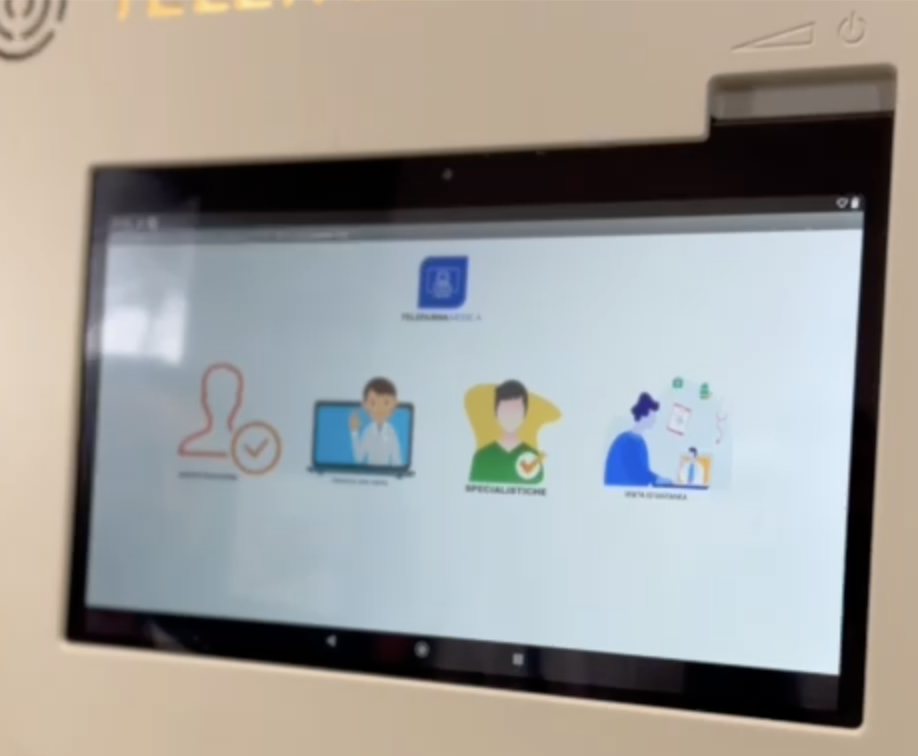
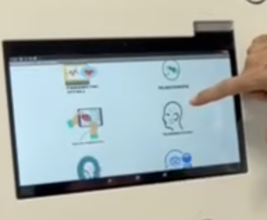
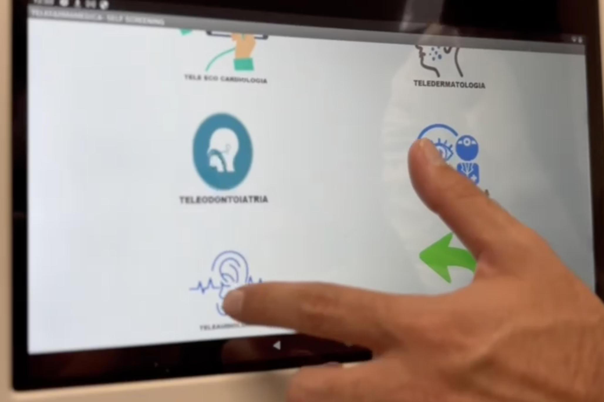
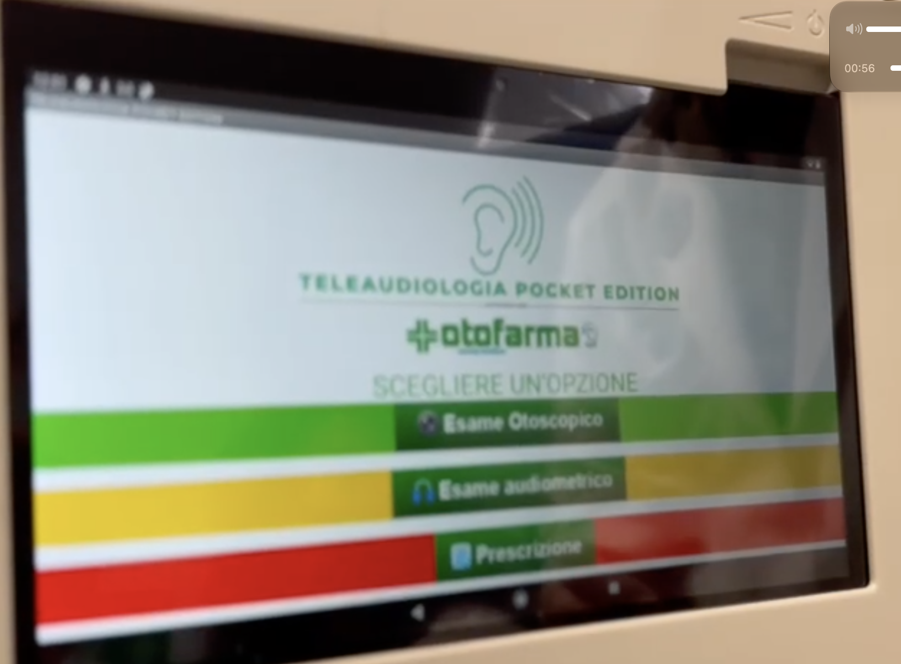
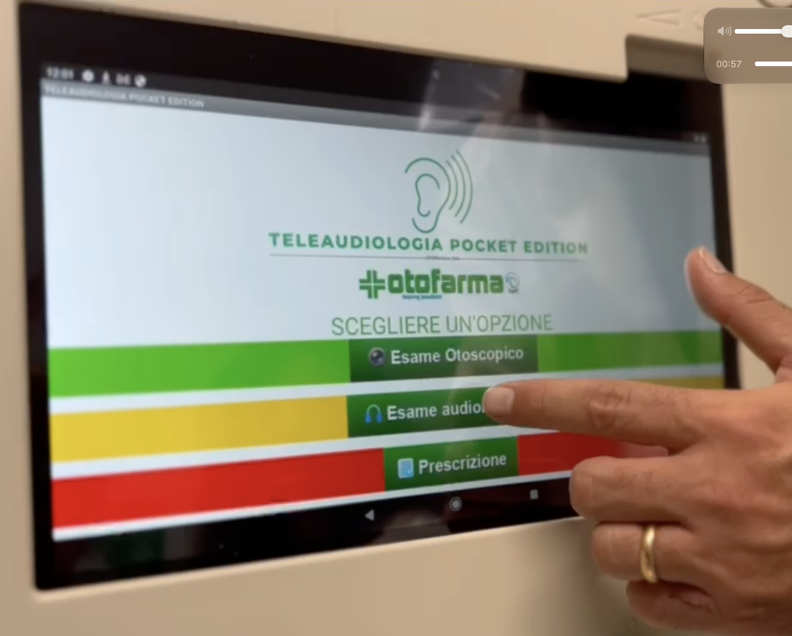
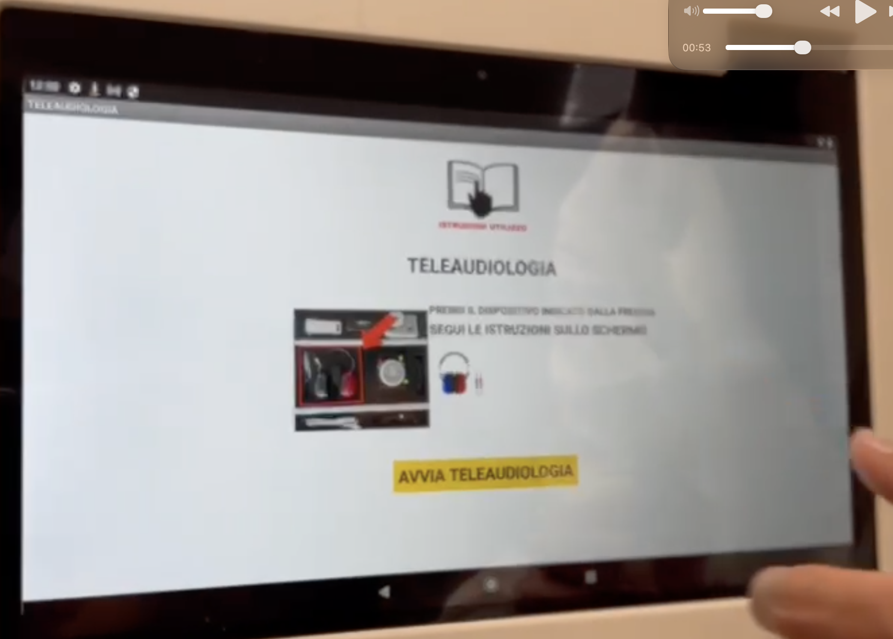
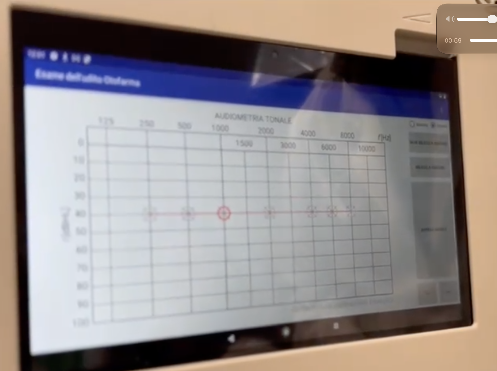

این صفحه فقط تفسیر من است، نه طراحی جدید. هر عکس را همانجا گذاشتهام که فکر میکنم در مسیر قرار میگیرد. اگر جایی غلط خواندهام، شمارهٔ همان مرحله را بگویید.
اسم فایلها به دستم نرسید.
نوشته بودید اسم، ترتیب است و ۲.۱ یعنی مرحلهٔ ۲ بخش ۱. در انتقال، اسم اصلی پاک شد. ترتیب پایین را خودم از روی محتوای صفحه چیدم، نه از روی اسم فایل.
ساعت ویدیو روی چهار عکس شنوایی این است: ۰:۵۳ صفحهٔ فلش، ۰:۵۶ سه رنگ، ۰:۵۷ انگشت روی زرد، ۰:۵۹ نمودار. من صفحهٔ فلش را بعد از سه رنگ گذاشتم، چون به نظرم اول انتخاب میکنند و بعد وسیله را برمیدارند. اگر ویدیو واقعاً اول فلش را نشان میدهد، این یکی را جابهجا میکنم.
مرحلهٔ ۱
اول آدم راه را انتخاب میکند، نه اسم اپ را
این را درِ ورود میبینم. چهار تصویر بزرگ است. فقط یکی از نوشتهها برایم خوانا بود: SPECIALISTICHE، یعنی کار تخصصی. بالای صفحه یک آیکون آبی است که متنش محو است و چیزی شبیه تلهمدیسین.

عکس محو است. برداشت من از چپ به راست در خود تصویر: یک نفر با تیک، پزشک در تماس تصویری، معاینههای تخصصی، یک نفر پشت میز با برگه.
برداشت: این صفحه هنوز حوزهٔ پزشکی نیست. میپرسد این بار کدام جور کار است. مسیر معاینههای تخصصی از همینجا به مرحلهٔ بعد میرود.
مرحلهٔ ۲
بعد، عضو یا تخصص را با آیکون انتخاب میکند
دو عکس از یک صفحهاند. یکی نمای دور است، یکی نزدیک. نوار بالا چیزی شبیه خودغربالگری تلهمدیسین است. هر گزینه یک نقاشی است و اسم تخصص زیر آن.

نمای دور. انگشت سمت راستِ بالای صفحه است.

نمای نزدیک. یک انگشت روی آیکون آبی است و یکی پایین، سمت گوش.
نوشتههایی که خواندم:
TELE ECG CARDIOLOGIA — قلب
TELEDERMATOLOGIA — پوست
TELEODONTOIATRIA — دندان
پایین، گوش با یک خط موج. نوشتهاش در عکس بریده، ولی به نظرم شنوایی است.
یک آیکون آبی دیگر (چشم یا چند نفر). متنش را مطمئن نخواندم.
برداشت: این همان «انتخاب حوزه» است. حوزه یعنی عضو بدن، نه اسم برنامه. فلش سبزِ بزرگ یعنی برگشت. انگشت دارد شنوایی را نشان میدهد، پس عکسهای بعدی را ادامهٔ همین انتخاب میدانم.
مرحلهٔ ۳
داخل شنوایی فقط سه نوار رنگی است
عنوان صفحه SCEGLIERE UN'OPZIONE است، یعنی یک گزینه را انتخاب کن. بالا گوش و لوگوی Otofarma و عبارت TELEAUDIOLOGIA POCKET EDITION است. دو عکس همین صفحه است. در دومی انگشت روی نوار زرد است. ساعت ویدیو ۰:۵۶ و ۰:۵۷.

ساعت ۰:۵۶. صفحه خالی از دست، هر سه گزینه دیده میشود.

ساعت ۰:۵۷. انگشت روی نوار زرد است.
رنگ
نوشتهٔ روی صفحه
معنی برای من
سبز
Esame Otoscopico
معاینه با اتوسکوپ، دیدن داخل گوش
زرد
Esame audiometrico
آزمایش شنوایی. انگشت این را زده
قرمز
Prescrizione
نسخه
برداشت: این صفحهٔ دوم است: اپهای مربوط به همان حوزه. اینجا سه کار است، نه فهرست نصب. رنگ، خودِ دکمه است. لازم نیست متن ریز بخواند.
مرحلهٔ ۴
قبل از باز شدن برنامه، یک عکس از جعبهٔ واقعی است
ساعت ویدیو ۰:۵۳ است، یعنی در خود ویدیو زودتر از منوی سهرنگ دیده میشود. من آن را بعد از انتخاب زرد گذاشتهام. عنوان TELEAUDIOLOGIA است. بالای صفحه یک کتاب است با نوشتهٔ قرمز دستور استفاده.

فلش قرمز یک وسیله داخل جعبه را نشان میدهد. دکمهٔ زرد پایین است.
جملهٔ اول، تا جایی که خواندم: وسیلهای را بردار که فلش نشان میدهد.
جملهٔ دوم: دستور را روی صفحه دنبال کن.
تنها دکمه: AVVIA TELEAUDIOLOGIA، یعنی شنواییسنجی را شروع کن.
برداشت: این صفحهٔ سوم است. راهنما متن طولانی نیست. عکس خودِ وسیله است، فلش میگوید کدام را بردار، و یک دکمهٔ زرد برنامه را باز میکند. کار این صفحه همین است.
مرحلهٔ ۵
بعد از شروع، دیگر صفحهٔ راهنما نیست
ساعت ویدیو ۰:۵۹. نمودار AUDIOMETRIA TONALE است، آزمایش شنوایی با فرکانس و شدت صدا. نوار آبی بالا نوشتهای نزدیک به «آزمایش شنوایی» دارد. سمت راست دکمههایی هست که در عکس محو است.

این را خودِ برنامهٔ معاینه میدانم، نه پوستهٔ انتخاب Otofarma.
برداشت: دکمهٔ زرد مرحلهٔ قبل این برنامه را باز کرده. از اینجا به بعد شخص داخل نرمافزار شنوایی است. لانچر دیگر توضیح نمیدهد.
جمع برداشت، در یک خط
آدم راه را انتخاب میکند، بعد عضو بدن را، بعد یکی از سه رنگ را، بعد از روی فلش وسیله را برمیدارد و دکمهٔ زرد را میزند. نمودار، نتیجهٔ باز شدن برنامه است.
اگر این پنج قدم با ترتیب فایلهای شما یکی است، طراحی فیگما را روی همین میچینم: آیکون عضو، نوار رنگی، عکس وسیله با فلش، یک دکمهٔ شروع. اگر مرحلهای را اشتباه به هم وصل کردهام، همان شماره را بگویید.